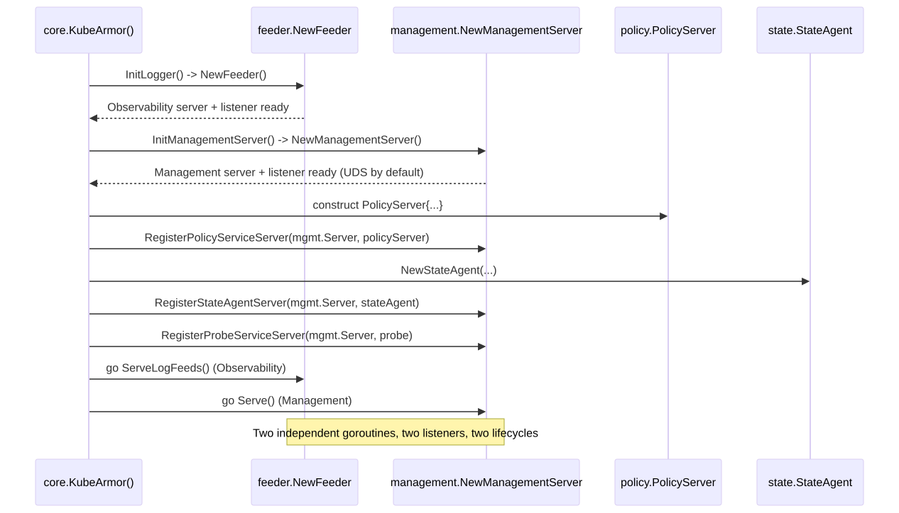

A design for registering KubeArmor's Management services (PolicyService, ProbeService, StateAgent) without overloading the feeder package — a follow-up to the Observability/Management plane separation proposal.
The previous proposal established that KubeArmor should split its gRPC surface into an Observability Server (LogService) and a Management Server (PolicyService, ProbeService, StateAgent). This document answers the natural follow-up question the split raises: where, in the codebase, should the Management Server's transport and registration logic actually live?
The feeder package's own doc comment states its job precisely: "Package feeder is responsible for sanitizing and relaying telemetry and alerts data to connected clients." Nothing in that charter mentions policy, probe, or state administration. Yet today, core/kubeArmor.go reaches into dm.Logger.LogServer — a field owned by feeder — and registers PolicyService, ProbeService, and StateAgent onto it. This document shows that this is a design smell, not a necessity: the business logic for these services already lives in clean, dedicated packages (policy, state, and core's own Probe); only the transport hosting is misplaced.
Recommendation: introduce a small, dedicated management package — a peer of feeder, not a subordinate of it — that owns the Management Server's listener, grpc.Server, health/reflection registration, and lifecycle. Both feeder and management share a new, minimal, business-logic-free grpcutil package for TLS/listener/keepalive plumbing, so neither duplicates code nor depends on the other. core remains the single composition root that wires business-logic packages onto the correct transport.
// Package feeder is responsible for sanitizing and relaying telemetry and alerts data to connected clients
package feederThis is not an incidental comment — it matches everything the package actually does: BaseFeeder owns EventStructs (the MsgStructs/AlertStructs/LogStructs fan-out registries), PushMessage/PushLog/PushAlert feed them, and logServer.go implements exactly one gRPC service, LogService, streaming those events out. Every part of feeder's design — bounded per-client queues, throttling state, the LogService handlers — exists to serve one job: telemetry relay.
Feeder is not only a telemetry transport — it is also the structured logging facade used almost everywhere else in the daemon. Grepping the codebase shows *fd.Feeder injected as a Logger field into most other subsystems, used exclusively for .Print / .Errf / .Warnf / .Debug calls:
| Consumer package | Field | Used for |
|---|---|---|
enforcer (RuntimeEnforcer, BPFEnforcer, AppArmorEnforcer, SELinuxEnforcer) | Logger *fd.Feeder | .Print / .Errf / .Warnf — status and error logging only |
monitor (SystemMonitor) | fd.Feeder reference | Structured logging + raw event hand-off into PushMessage |
presets (base.Preset and implementations) | fd.Feeder reference | .Errf / .Print for preset lifecycle logging |
networkPolicyEnforcer | fd.Feeder reference | .Errf / .Print for enforcement status logging |
core (KubeArmorDaemon) | Logger *fd.Feeder | Logging and (today) the transport being reused for management registration |
This table is the crux of the analysis: every one of these consumers only ever touches feeder's logging surface. None of them call, reference, or care about LogServer/Listener. Feeder is a legitimate, heavily-shared dependency for logging — that role must not be disturbed by this proposal. The problem is narrower and sharper than "feeder is overused" — it is specifically that one field, LogServer *grpc.Server, is being treated as a general-purpose gRPC registration point by code outside the package, for services that have nothing to do with feeder's charter.
This is the most important finding: the business logic for the Management plane is already cleanly separated — it is only the transport wiring that is not.
| Service | Business logic package | Package doc comment | Transport registration today |
|---|---|---|---|
PolicyService | policy (PolicyServer struct) | "Package policy handles policy updates over gRPC in non-k8s environment" | pb.RegisterPolicyServiceServer(dm.Logger.LogServer, policyService) |
StateAgent | state (StateAgent struct) | "package state implements the state agent service..." | pb.RegisterStateAgentServer(dm.Logger.LogServer, dm.StateAgent) |
ProbeService | core/karmorprobedata.go (Probe struct) | (no dedicated package yet) | pb.RegisterProbeServiceServer(dm.Logger.LogServer, probe) |
policy and state are already independent, transport-free packages with zero knowledge of grpc.Server, TLS, or listeners — exactly the shape you want for business logic. The only place any of this reaches for a transport is three call sites in core/kubeArmor.go, and all three reach for the same wrong object: dm.Logger.LogServer.
feeder's doc comment will not expect to find PolicyService — a policy-mutation surface — reachable through the same object.core/kubeArmor.go, not in feeder, so nothing in the feeder package itself signals its server also serves administrative RPCs.enforcer, monitor, presets, and networkPolicyEnforcer all depend on feeder for logging, any future change to management-facing server behavior sits inside the same package that a large, unrelated swath of the codebase compiles against.policy and state are dedicated, transport-free packages. Bolting their transport onto feeder is an asymmetry — two planes get a "home," Management does not.dm.Logger.LogServer too."PolicyService today requires standing up a full feeder.Feeder (file output, throttle maps, EventStructs) even though PolicyService has nothing to do with any of that.grpc.Server for two planes." If the split still leaves core reaching into a feeder-owned field, the fix is cosmetic, not structural.| Alternative | Description | Verdict |
|---|---|---|
| A. Status quo | Keep registering on dm.Logger.LogServer (or its post-split successor) | Rejected. Reproduces the exact coupling from Part 2; a cosmetic rename, not real separation. |
| B. Inline in core | Add a second grpc.Server/listener directly as fields on KubeArmorDaemon, built inline in kubeArmor.go | Rejected as primary. core is already the largest, least modular package; this deepens the monolith and gives Management no independently testable unit. |
| C. Second server field inside feeder | Add fd.ManagementServer alongside fd.LogServer, still inside feeder | Rejected. Every logging-only consumer of feeder would compile against unrelated control-plane transport code; makes the doc comment misleading; entangles lifecycles. |
| D. Dedicated management package (recommended) | A new package, peer to feeder/policy/state, owning only the Management transport | Recommended. Restores symmetry, keeps feeder honest, independently testable, zero change for logging-only consumers. |

Figure 1 — Four strict layers; dependencies only point downward; feeder and management never depend on each other.
This is a strict four-layer dependency-inversion structure. feeder and management never depend on each other. policy, state, and a proposed new probe package (extracted from core/karmorprobedata.go for symmetry) know nothing about gRPC transport at all — they simply implement the generated pb.*Server interfaces. core is the only package allowed to know about both transport and business logic, because composition is its job.

Figure 2 — Before/after dependency graph. Logging-only consumers of feeder are entirely unaffected.
Note what does not change: enforcer, monitor, presets, and networkPolicyEnforcer keep exactly the same dependency on feeder they have today, for exactly the same reason (logging). This design change is entirely invisible to them.

Figure 3 — core constructs both transport owners, then registers business-logic structs before serving either.
| Package | Owns | Does not own | Depended on by |
|---|---|---|---|
grpcutil (new) | Listener construction (tcp/unix), TLS credential loading (wraps cert), keepalive profiles | Any pb.*Server implementation or business logic | feeder, management |
feeder (narrowed) | LogService transport, injectable Logger utility, EventStructs fan-out | PolicyService, ProbeService, StateAgent | core, enforcer, monitor, presets, networkPolicyEnforcer |
management (new) | Management transport, UDS default, own TLS/keepalive profile | Any business logic — only registers structs handed to it | core |
policy (unchanged) | PolicyServer business logic | Any transport, listener, or TLS concern | core |
state (unchanged) | StateAgent business logic | Any transport, listener, or TLS concern | core |
probe (new, extracted) | Probe business logic | Any transport, listener, or TLS concern | core |
core (thinner) | Composition: constructs transport owners and business-logic structs, registers the latter onto the former | Any gRPC bootstrap logic | — |
management package// Package management owns the Management gRPC server: PolicyService,
// ProbeService, and StateAgent are registered onto it by core. This
// package has no knowledge of policy, probe, or state business logic -
// it only hosts the transport those services are registered on.
package management
type Server struct {
Listener net.Listener
Server *grpc.Server
HealthServer *health.Server
SocketPath string // Unix Domain Socket path, default transport
Addr string // optional TCP fallback (e.g. localhost:PORT)
}
type Config struct {
SocketPath string // /var/run/kubearmor/kubearmor-management.sock
FallbackAddr string // used only if UDS is unavailable (e.g. Windows)
TLSEnabled bool
NodeIP string
EnableReflection bool
}
// NewServer builds and binds the Management transport but does not
// start serving; core registers business-logic servers first.
func NewServer(cfg Config) (*Server, error)
// Serve blocks, accepting Management RPCs. Call in a goroutine.
func (s *Server) Serve() error
// GracefulStop drains in-flight management RPCs and stops the server,
// independent of the Observability server's lifecycle.
func (s *Server) GracefulStop()grpcutil package// Package grpcutil provides transport-only helpers shared by feeder
// (Observability) and management (Management). It contains no
// business logic and knows nothing about any specific gRPC service.
package grpcutil
type ListenerKind int
const ( TCP ListenerKind = iota; UnixSocket )
func NewListener(kind ListenerKind, addr string) (net.Listener, error)
func LoadServerTLS(nodeIP string, certPath string) (credentials.TransportCredentials, error)
type Profile int
const ( StreamingProfile Profile = iota; UnaryProfile )
// KeepaliveFor returns tuned keepalive settings per traffic profile,
// instead of one hardcoded pair shared by every service.
func KeepaliveFor(p Profile) (keepalive.EnforcementPolicy, keepalive.ServerParameters)feeder.NewFeeder is refactored to call grpcutil.NewListener/grpcutil.LoadServerTLS/grpcutil.KeepaliveFor(grpcutil.StreamingProfile) internally instead of hand-rolling that logic (today's private loadTLSCredentials in feeder.go moves here, unchanged in behavior). management.NewServer calls the same helpers with grpcutil.UnaryProfile and, by default, grpcutil.UnixSocket. Neither package imports the other.
This is intentionally incremental — every step compiles and runs on its own:
grpcutil. Move loadTLSCredentials and the kaep/kasp construction out of feeder.go into the new package, unchanged in behavior. (No externally visible change.)management package. Add Server/Config/NewServer/Serve/GracefulStop, built on grpcutil, defaulting to a Unix Domain Socket. (New code, not yet wired in.)probe. Move Probe/GetProbeData out of core/karmorprobedata.go into a new probe package, for symmetry with policy and state. SetProbeContainerData stays on KubeArmorDaemon since it is genuinely daemon state, not probe-service logic.dm.ManagementServer to KubeArmorDaemon. Add InitManagementServer()/CloseManagementServer() mirroring the existing InitLogger()/CloseLogger() pattern.dm.Logger.LogServer to dm.ManagementServer.Server for PolicyService, ProbeService, and StateAgent.dm.ManagementServer its own health.Server and reflection.Register call, independent of dm.GRPCHealthServer.DestroyKubeArmorDaemon() calls dm.ManagementServer.GracefulStop() alongside dm.CloseLogger(), so either can fail or drain independently.Each step leaves the daemon in a working, testable state — this can land as a sequence of small PRs rather than one large rewrite.
management gets its own management_test.go, following the exact pattern feeder_test.go already established (net.Listen("tcp", ":0") for a throwaway test listener) — without needing to construct a full Feeder just to test a unary RPC registration.policy and state tests remain entirely unchanged — they already test business logic against interfaces, not against a live server.core-level integration tests can now spin up just management.Server to test policy-push behavior, or just feeder.Feeder to test log streaming, instead of always needing the full daemon bring-up.This proposal is about package-level ownership of service registration — a narrower, more code-structural question than the transport-level split in the first proposal. The clearest industry precedent is Kubernetes' own generic API server design.
Kubernetes' k8s.io/apiserver defines a RESTStorageProvider interface — each API group (apps, batch, authorization, etc.) implements NewRESTStorage(...) (APIGroupInfo, error) in its own dedicated package (e.g. pkg/registry/authorization/rest), with zero knowledge of HTTP transport, TLS, or listener setup. A separate, shared genericapiserver package owns the actual transport, and a composition root (cmd/kube-apiserver/app/server.go, CreateServerChain) wires every group's provider onto the shared server. Kubernetes has actively refactored away from ad-hoc, legacy storage wiring toward this standard provider pattern (kubernetes/kubernetes#119042, explicitly framed as reducing "spaghetti" wiring) — the same direction this proposal recommends for KubeArmor.
| Kubernetes concept | KubeArmor equivalent |
|---|---|
RESTStorageProvider implementation per API group | policy.PolicyServer, state.StateAgent, probe.Probe |
genericapiserver (shared transport, no business logic) | management package (+ shared grpcutil kernel) |
CreateServerChain / composition root | core/kubeArmor.go's KubeArmor() |
| Refactor away from legacy ad-hoc storage wiring (#119042) | This migration: away from dm.Logger.LogServer reuse |
Reference: Kubernetes apiserver ARCHITECTURE.md; RESTStorageProvider / apis.go; genericapiserver.go; kubernetes/kubernetes#119042.
| Risk | Mitigation |
|---|---|
| Adding a new package increases import graph size | Small package (listener + grpc.Server + health/reflection lifecycle, no business logic), mirrors feeder's already-understood shape |
| Duplicated TLS/keepalive logic between feeder and management | grpcutil exists specifically to prevent that duplication |
Migration touches core/kubeArmor.go, a large sensitive file | Migration plan (Part 7) is staged so each step compiles independently and can be reviewed/reverted in isolation |
| Unix Domain Socket default may not suit all environments (e.g. Windows) | management.Config.FallbackAddr supports a localhost-bound TCP fallback |
Extracting probe from core could be seen as scope creep | Framed as optional; the core recommendation (dedicated management package) stands even if Probe stays in core |
The first proposal established that KubeArmor needs two gRPC transports: one for Observability, one for Management. This document answers where the second one should actually be built: not inside feeder, which is correctly scoped to telemetry relay and is too widely depended-upon (by enforcer, monitor, presets, networkPolicyEnforcer) to also carry control-plane transport concerns, but in a new, dedicated management package — a peer of feeder, symmetric with the already-well-separated policy and state business-logic packages, and built on a small shared grpcutil kernel so neither transport owner duplicates code or depends on the other. core remains the single, explicit composition root, exactly mirroring the RESTStorageProvider / genericapiserver pattern Kubernetes itself uses to keep API-group business logic separate from server transport. This is an incremental, low-risk migration (Part 7) that can land as a sequence of small, independently reviewable changes.
KubeArmor/KubeArmor/feeder/feeder.go, KubeArmor/KubeArmor/feeder/logServer.go, KubeArmor/KubeArmor/core/kubeArmor.go, KubeArmor/KubeArmor/core/karmorprobedata.go, KubeArmor/KubeArmor/policy/policy.go, KubeArmor/KubeArmor/state/stateAgent.go, KubeArmor/KubeArmor/enforcer/*.go, KubeArmor/KubeArmor/monitor/systemMonitor.go, KubeArmor/KubeArmor/presets/*, KubeArmor/KubeArmor/networkPolicyEnforcer/networkPolicyEnforcer.go.